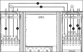

Connect the Power Cables on the 10-40 kVA Parallel Redundant System with Top Cable Entry and Bypass Transformer
-
Connect the power cables:
- Connect the input cables to the X311 (L1, L2, L3, N1) terminals in AUX cabinet 1 and AUX cabinet 2.
- Connect the bypass cables to the X301 (3:3: L1, L2, L3)/(3:1 10–20 kVA: L, N)/(3:1 30–40 kVA: L1, L2) terminals in AUX cabinet 2.
- Connect the output cables to the X699 (3:3 : L1, L2, L3, N)/ (3:1: L, N) terminals in AUX cabinet 2.
- Connect the output interconnection cables from the X692 (3:3 : L1, L2, L3, N)/ (3:1: L, N) terminals in AUX cabinet 1 to X692 (3:3 : L1, L2, L3, N)/ (3:1: L, N) in AUX cabinet 2.
- Connect the bypass transformer interconnection cables from X312 (3:3 : L1, L2, L3, N)/ (3:1: L, N) in AUX cabinet 1 to X312 (3:3 : L1, L2, L3, N)/ (3:1: L, N) in AUX cabinet 2.
- Connect the battery cables to the X314 (B+,B-) terminals in AUX cabinet 1 and AUX cabinet 2.
Figure 1. Front View of AUX Cabinet 1 and UPS 2 with AUX Cabinet 2 — 3:3 Figure 2. Front View of AUX Cabinet 1 and UPS 2 with AUX Cabinet 2 — 3:1 
1 No N if input transformer is installed